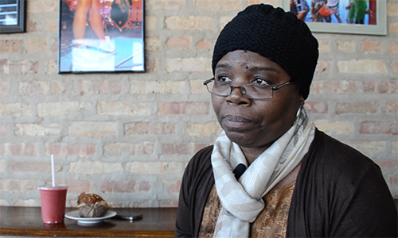
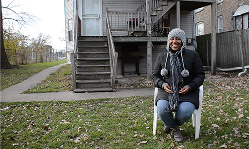

CHICAGO'S MURDER COUNT IS HALF WHAT IT WAS 20 YEARS AGO,
YET THE CITY RETAINS ITS REPUTATION AS “the murder
capital of the United States.” IS THAT LABEL STILL ACCURATE?
by clayton gentry, marissa mizroch, tyler pager and thaddeus tukes
f
or the past 20 years, Asiaha Butler has lived in Chicago’s Englewood neighborhood, an area many consider to be one of the most dangerous parts of the city. But she doesn’t pay attention to crime rates.
“This is the only time in my life I’ve seen the news report so much on violence,” she said. “It was happening in the ‘90s and the early 2000s, but it wasn’t being reported on. And I’ve talked to journalists before who actually never came to Englewood to report on violence, whereas today they wait around in the community for gunshots.”
On the heels of the midterm elections and as politicians begin to form agendas for the new term, a focus to crack down on crime has emerged. Although crime has decreased in Chicago, the city has retained its reputation of “the murder capital of the United States” in both politics and the media. However, residents and experts question whether that label is fair.
In 2012, the FBI published its annual “Crime in the United States” report, which listed that 500 murders, more than 13,000 robberies, more than 12,000 aggravated assaults and more than 112,000 property crimes occurred in Chicago that year. However, there were almost twice as many murders, 936, in Chicago 20 years prior.
Drew DeSilver, a senior writer for the Pew Research Center, said people’s perceptions of crime have rarely aligned with crime rates.
“Crime has gone down significantly the last couple of decades,” he said. “But for the longest time when we asked people how bad crime was, people thought crime was a much bigger problem than it was. Once perceptions are set, they’re very hard to change, even in the face of contradictory data.”
Tracy Siska, executive director of the Chicago Justice Project, said crime statistics are “never” accurately portrayed. Rather, politicians use crime rates as a way to instill fear in their constituents.
“One incident… is exploited by the politicians, and then the press picks up and they exploit it as if the police are supposed to prevent every single crime, as if a safe community never experiences any crime,” he said. “That’s not a reality. We all know it, but we’re not talking about logic. We’re talking about exploiting people through their fears.”
Politicians have capitalized on these perceptions in order to rally support during election periods. For example, in this year’s Illinois gubernatorial election, Republican candidate Bruce Rauner harped on Gov. Pat Quinn’s failure to adequately address the issue of crime.
“We have rampant crime in our neighborhoods, violent crime that is putting families in Illinois, families in Chicago at fundamental risk,” Rauner said, according to the Chicago Tribune. “And Pat Quinn has failed on violent crime. He’s created an environment where it can thrive.”
Arthur Lurigio, a professor of psychology and criminal justice at Loyola University Chicago, calls it “the politicization of crime.” He said during election cycles, politicians try to convince voters they are tougher on crime than their opponents.


Englewood residents Gloria Williams, Asiaha Butler and Jawaun Hall
said the media has exaggerated the nature of violence in their neighborhood.
“What politicians can do is pass laws, set policies and make speeches that can influence the way the laws are enforced,” he said. “Whether they are really doing things to change the [behavior of] people that commit crimes, I would say no.”
Siska agreed with Lurigio, saying police don’t prevent crimes because that’s “not what America wants or needs.”
“Americans don’t want a preventative police force because they don’t want a guy with a machine gun sitting around on every corner,” he said. “When you get into preventative, you get into stop-and-frisk and racial stereotypes. We’re set up to be reactionary, and it’s not a bad thing.”
But for Englewood resident Jauwan Hall, the police in Englewood have acted preventatively, rather than reactively, too often. Hall, a veteran of U.S. Marine Corps, said he has been stopped by police in and around Englewood for “no reason” many times.
“I’ve got a million stories,” he said.
One day, Hall was taking some clothes to his son in the Auburn Gresham neighborhood to the southwest of Englewood, when the police pulled him over without telling him why, he said. The officers pulled him out of the car, handcuffed him and searched him and his vehicle.
They told Hall they found two bags of marijuana in the backseat of his car and threatened to take him to jail.
“The only reason I didn’t go to jail that night was they called the lieutenant over from the station, and he happened to be an officer, a reserve officer, in the Army, and he told them to let me go,” he said.
Hall said his Marine uniform was hanging in the backseat of the car.
“If I wasn’t in a position to where I had some sort of privilege by being a vet, if I had not served my country already,” he said, “there’s no telling how criminalized my life could be right now.”
In an attempt to reduce the 2012 murder rate, Chicago paid police officers approximately $103 million in overtime in 2013, with some officers receiving more overtime pay than salary. The 2013 murder total dropped to 414 from the 2012 total of 500, according to the FBI’s 2013 crime report.
Butler, the Englewood resident, said the increased police presence in her neighborhood did not make residents feel more secure, in spite of the reduced homicide count.
“In the summer we had all these bikes – cops on bikes, cops walking, cops all over our block and just in Englewood in general,” she said. “People didn’t feel safe that they were around because they don’t speak and engage with the community.”
Spotlight on Englewood
a more interesting title goes here
Lurigio, the Loyola University professor, said the most telling way to assess politicians’ knowledge of crime is by their approach to solving the issue.
“The politicians who are well versed on the crime issue are talking more about keeping people out of the criminal justice system,” he said. “They are talking about diversionary programs, especially people who have been convicted of low-level drug sentences instead of going to prison.”
Butler echoed the necessity for politicians and community activists to dedicate more resources to crime prevention rather than punishment. Butler co-founded the Resident Association of Greater Englewood, an activist organization that works to reorient the largely negative perception of Englewood.
“When I think about, for example, a school, you have A students and you have F students,” Butler said. “But then the majority are these C [students], average individuals. No one’s paying attention to that bigger group, and I feel like all the attention [goes] to these people who are terrorizing the community.”
The result of politicians exaggerating the issue of crime, experts say, is an ineffective system of enforcement.
“By locking up 2.2 million people,” Lurigio said, “you are keeping them out of circulation, but they are eventually released and then their lives are much worse off than before they went to prison.”